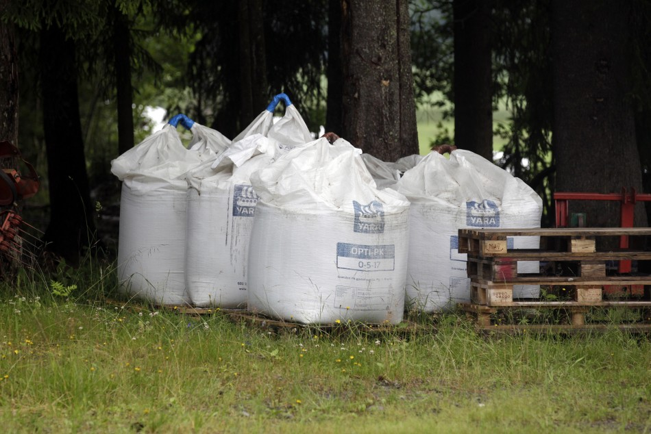

Данный сайт является частью школьного проекта по информатике, и включает в себя веб-приложение для расчёта количества минеральных удобрений онлайн. Сайт состоит из трёх частей: в первой части находится рписание нашего проекта, во второй - краткая памятка про удобрения, в которой подробно описываются разновидности минеральных удобрений, правила по их пременению, а также указаны лучшие отечественные поизводители. Наконец, в третьей части находится сам калькулятор. С его помощью вы можете рассчитать нужное количество 10 видов минеральных удобрений в зависимости от требуемого количества действующего элемента в почве. А если у вас есть предложения пло улучшению нашего проекта, то в конце страницы находится кнопка обратной связи.
Минеральные удобрения отличаются от органических большим содержанием питательных веществ. По составу происходит их деление на сложные и простые. Простые минеральные удобрения имеют один питательный элемент, сложные – несколько.
Азотные удобрения содержат один важный для питания растений элемент – азот. Этот вид удобрений влияет на урожайность всех культур: правильное применение азота способствует резкому увеличению качества и количества плодов, а его нехватка – снижению.
Каждый садовод должен знать, что бесконтрольное использование азота в количествах, превышающих норму, приводит к загрязнению окружающей среды путем вымывания из почвы и попадания в грунтовые воды и реки, а также оказывает отрицательное влияние на здоровье человека и животных, если находится в избытке в почве или в употребляемых ими растениях и плодах.
Калийные удобрения нужны растениям для лучшего усвоения углекислоты из воздуха и повышения устойчивости растений к засухе, морозам, болезням и вредителям. Калийные удобрения в виде раствора пригодны для любых почв. Они остаются в зоне внесения, поэтому заделку производят глубоко в землю. Бывает калий хлористый, сернокислый и калийная соль.

Фосфорные удобрения, где содержится второй главный минеральный элемент – фосфор, оказывают на растения положительное влияние следующим образом: ускоряют процесс появления плодов, увеличивают количество и качество урожая, делают растения более устойчивыми при засухе и морозах.
Фосфорные удобрения следует вносить глубже в почву, ближе к зоне корневой системы, так как состояние фосфора в почве – малоподвижное.
Азотные удобрения |
Количество удобрения в центерах на гектар
Азотные удобрения12
|
Фосфорные удобрения |
Фосфорные удобрения9
|
Калийные удобрения |
Калийные удобрения3
|
Азотные удобрения |
Количество удобрений в гр/м3 |
Фосфорные удобрения |
|
Калийные удобрения |
Ниже представлена таблица выноса (потребности) азота, фосфора и калия для
основных сельскохозяйственных культур в граммах на метр кубический
(Представлены СРЕДНИЕ значения)
| Растение | N | P | K |
|---|---|---|---|
| Картофель | 7 | 7 | 7,5 |
| Зерновые | 7,5 | 7,6 | 7 |
| Томаты | 7,5 | 7 | 8 |
| Свёкла кормовая | 7 | 8 | 7 |
| Огурцы | 5,5 | 6 | 6 |
| Капуста белокочанная | 5,5 | 5 | 4 |
| Морковь | 5,5 | 5 | 5,5 |
| Лук репчатый | 6,5 | 7 | 7,5 |
| Подсолнечник (семена) | 3,5 | 3,5 | 1,2 |